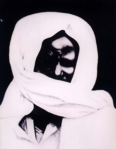
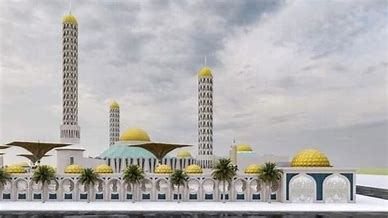

Le Sénégal, en forme longue la république du Sénégal, est un État d'Afrique de l'Ouest.
Il est bordé par l'océan Atlantique à l'ouest, la Mauritanie au nord-nord-est, le Mali à l'est-sud-est, la Guinée au sud-est et la Guinée-Bissau au sud-sud-ouest. La Gambie forme une quasi-enclave dans le Sénégal, pénétrant à plus de 302 km à l'intérieur de ses terres. Les îles du Cap-Vert sont situées à 560 km de la côte sénégalaise.
Le pays doit son nom au fleuve qui le borde à l'est et au nord et qui prend sa source dans le Fouta-Djalon en Guinée. Le climat est tropical et sec avec deux saisons : la saison sèche et la saison des pluies.
les villes religieus
TOUBA

La ville sainte de Touba fut fondée dans la forêt de Mbaffar en 1888 par le cheikh Ahmadou Bamba Khadimou Rassoul, le fondateur du mouridisme.Touba est une ville du Sénégal, siège de la confrérie musulmane des mourides2, située à 194 km à l'est de la capitale Dakar3 dans le département de Mbacké. Elle est la deuxième ville la plus peuplée du pays, derrière la capitale Dakar1, avec plus d'un million d'habitants, et une agglomération comptant, selon les sources, entre 1 000 000 et 1 500 000 habitants en 20184.
TIVAOUANE

Tivaouane faisait partie du royaume de Cayor, dont elle a été la capitale. Son existence était déjà signalée par le navigateur vénitien Alvise Cadamosto au xve siècle.Tivaouane en wolof Tiwawane est une ville de l'ouest du Sénégal, proche de Thiès. Tivaouane est ville sainte, un grand centre de la confrérie soufie Tijaniyya. Il est l'un des trois départements de la région de Thiès, avec Mbour.